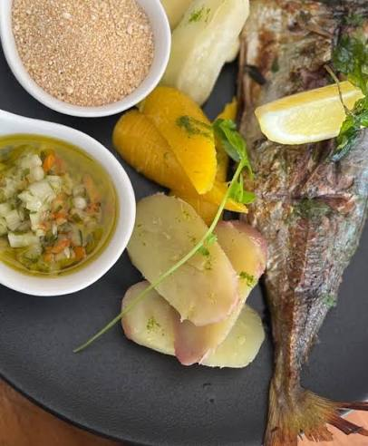

Menus
Menus pensados para voltar.
Os sabores que já conhece, num menu pensado para momentos especiais. A carta principal é servida no Roots e na Mutamba, com a mesma qualidade à mesa.

Boa comidaboas histórias A nossa picanha · Pátio Luanda
O nosso menu
Os mesmos sabores, em dois espaços únicos.
Do mar à brasa, das entradas às sobremesas — com sushi no Roots.
Roots
by Pátio Luanda
No Roots, há também sushi.
Além do menu principal Pátio Luanda, o Roots oferece uma seleção de sushi, rolls e combinações exclusivas, com ingredientes frescos e uma abordagem contemporânea.